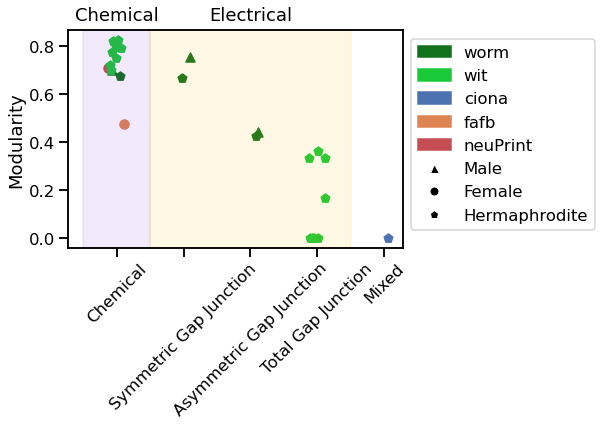

Modularity¶
In this notebook, we will calculate the modularity of each graph.
import numpy as np
import pandas as pd
import seaborn as sns
import networkx as nx
import matplotlib.pyplot as plt
import matplotlib.patches as ptch
from matplotlib.lines import Line2D
from graph import GraphIO
from graspologic.utils import symmetrize, to_weighted_edge_list
from graspologic.partition import leiden, modularity
from c_elegans.witvilet2020.load_wit import load_wit
from c_elegans.worm_wiring.load_worm import load_worm
%matplotlib inline
Load graphs.
worm_graphs = load_worm()
wit_graphs = load_wit()
worm_connectomes = worm_graphs[6:12]
neuPrint = './json_connectomes/neuPrint_graphs.json'
fafb = './json_connectomes/fafb.json'
ciona = './json_connectomes/ciona.json'
G_neuP, _, _, _ = GraphIO.load(neuPrint)
G_fafb, _, _, _ = GraphIO.load(fafb)
G_ciona, _, _, _ = GraphIO.load(ciona)
Change the graph nodes which are type int to type str.
def nodes_to_string(G):
'''
Given a networkx graph, convert the nodes into type str.
'''
str_nodes = []
for i in G.nodes:
new_node = str(i)
str_nodes.append(new_node)
mapping = dict(zip(G, str_nodes))
graph_str = nx.relabel_nodes(G, mapping)
return graph_str
G_neuP_str = nodes_to_string(G_neuP)
G_fafb_str = nodes_to_string(G_fafb)
Change the directed graphs into undirected by recreating the graph with newly weighted edges. The new weight is defined as the average weight between two nodes.
def average_undirect(G):
G_undirect = nx.Graph()
G_un = []
nodes_list = []
for (u, v, wt) in G.edges.data('weight'):
for (ui, vi, wti) in G.edges.data('weight'):
if vi == u and ui == v:
n_a = u
n_b = v
new_wt = (wt+wti)/2
if (n_a, n_b) not in nodes_list:
nodes_list.append((n_a, n_b))
G_un.append((n_a, n_b, new_wt))
G_undirect.add_weighted_edges_from(G_un)
return G_undirect
def modulate_graphs(G):
'''
Given the networkx graph, returns the modularity of each graph.
'''
if type(G) is nx.MultiDiGraph:
G = G.to_undirected()
G = GraphIO.multigraph_to_graphs(G)
leids = []
ms = []
for g in G:
leiden_g = leiden(g)
leids.append(leiden_g)
m = modularity(g,leiden_g)
ms.append(m)
return ms
if type(G) is nx.DiGraph:
G = G.to_undirected()
leiden_g = leiden(G)
m = modularity(G,leiden_g)
return m
else:
leiden_g = leiden(G)
m = modularity(G,leiden_g)
return m
Use the same method in Graph Stats.ipynb developed by Paul to visualize the result.
fafb_graph = G_fafb_str
neuPrint_graph = G_neuP_str
ciona_graph = G_ciona
ciona_graph.graph["Sex"] = "Hermaphrodite"
ciona_graph.graph["synapse_type"] = "Mixed"
fafb_graph.graph["Sex"] = "Female"
fafb_graph.graph["synapse_type"] = "Chemical"
neuPrint_graph.graph["Sex"] = "Female"
neuPrint_graph.graph["synapse_type"] = "Chemical"
mod = []
graph_origin = []
synapse_type = []
s = []
graph_origin = []
for g in worm_connectomes:
graph_origin.append("worm")
synapse_type.append(g.graph['Synapse Type'])
s.append(g.graph['Sex'])
g_u = average_undirect(g)
mod.append(modulate_graphs(g_u))
for graph in wit_graphs:
chemical_edges = []
electrical_edges = []
for *edge, attr in graph.edges(data=True, keys=True):
if attr['synapse_type'] == "chemical":
chemical_edges.append((*edge,))
elif attr['synapse_type'] == "electrical":
electrical_edges.append((*edge,))
g_chemical = graph.edge_subgraph(chemical_edges)
g_electrical = graph.edge_subgraph(electrical_edges)
for g, syn_type in [(g_chemical, "Chemical"), (g_electrical, "Total Gap Junction")]:
graph_origin.append("wit")
g_u = average_undirect(g)
mod.append(modulate_graphs(g_u))
synapse_type.append(syn_type)
s.append('Hermaphrodite')
for g, origin in zip([fafb_graph, neuPrint_graph], ["fafb", "neuPrint"]):
graph_origin.append(origin)
mod.append(modulate_graphs(g))
synapse_type.append(g.graph["synapse_type"])
s.append(g.graph["Sex"])
graph_origin.append("ciona")
print(modulate_graphs(ciona_graph))
mod.append(0)
synapse_type.append(ciona_graph.graph["synapse_type"])
s.append(ciona_graph.graph["Sex"])
s = np.array(s)
mod = np.array(mod)
graph_origin = np.array(graph_origin)
synapse_type = np.array(synapse_type)
nan
Above here, we plot out the true value of the modularity of ciona. For the code I have now, it returns the value as nan. For the consistance of plotting, I set the value of modularity in ciona as 0 for now.
Below are the modularity values for each graph:
mod
array([0.67587643, 0.42530557, 0.66619527, 0.70228917, 0.44383798,
0.75648366, 0.82148604, 0. , 0.82405983, 0. ,
0.79678834, 0. , 0.79124719, 0.16666667, 0.77743768,
0.33333333, 0.74976119, 0. , 0.72257865, 0.33333333,
0.70013869, 0.36419753, 0.47409648, 0.70747848, 0. ])
palette = sns.color_palette("deep")
dark_palette = sns.color_palette("dark")
bright_palette = sns.color_palette("bright")
syntypes = ["Chemical", "Symmetric Gap Junction", "Asymmetric Gap Junction", "Total Gap Junction", "Mixed"]
graph_origins = ["worm", "wit", "ciona", "fafb", "neuPrint"]
syntype_pos = [float(i) for i, _ in enumerate(syntypes)]
syntype2pos = {syntype:i for i, syntype in zip(syntype_pos, syntypes)}
syn_pos = np.array([syntype2pos[syntype] for syntype in synapse_type])
syn_pos += 0.25*(np.random.rand(syn_pos.shape[0]) - 0.5) #adding jitter
sexes = ["Male", "Female", "Hermaphrodite"]
sex2shape = {"Male":"^", "Hermaphrodite":"p", "Female":"o"}
graph2color = {"ciona":palette[0], "fafb":palette[1], "worm":dark_palette[2], "wit":bright_palette[2], "neuPrint":palette[3]}
graph2patch = {}
for g_origin in graph_origins:
graph2patch[g_origin] = ptch.Patch(color=graph2color[g_origin], label=g_origin)
sex2patch = {}
for isex in sexes:
sex2patch[isex] = Line2D([0], [0], marker=sex2shape[isex], color="w", markerfacecolor="k", label=isex)
def vis_stat(stat, stat_name, use_log=True):
fig_max = np.max(stat)
sns.set_context('talk')
fig = plt.figure()
ax = plt.gca()
plt.hold=True
for isex in sexes:
for g_origin in graph_origins:
mask = np.logical_and(s==isex, graph_origin==g_origin)
plt.scatter(syn_pos[mask],
stat[mask],
c=np.array([graph2color[g_origin]]),
label=g_origin,
marker=sex2shape[isex])
grace_factor = 1.1
if use_log:
grace_factor = np.exp(grace_factor)
plt.text(syntype_pos[0], grace_factor*fig_max, "Chemical", ha="center")
plt.text(syntype_pos[2], grace_factor*fig_max, "Electrical", ha="center")
plt.hold=False
plt.ylabel(stat_name)
ax.xaxis.set_ticks(syntype_pos)
ax.xaxis.set_ticklabels(syntypes, rotation=45)
fill_width = 1
ax.axvspan(syntype_pos[0]-fill_width/2, syntype_pos[0]+fill_width/2, color=bright_palette[4], alpha=0.1)
ax.axvspan(syntype_pos[1]-fill_width/2, syntype_pos[3]+fill_width/2, color=bright_palette[8], alpha=0.1)
if use_log:
ax.set_yscale("log")
handles = [graph2patch[g_origin] for g_origin in graph_origins]+[sex2patch[isex] for isex in sexes]
plt.legend(handles=handles, bbox_to_anchor=(1,1))
# return fig
vis_stat(mod, "Modularity", use_log=False)
